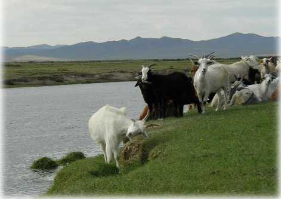

Goat

The Mongol name of a goat is 'yamaa '. Goat is an animal that the Mongols consider to be the most important livestock. And the goat is the animal which has the most valuable and expensive stuff indeed, Cashmere, a fine wool growing beneath the outer coarse hair of the goat , is considered as the finest and most expensive natural fiber. One kg of raw cashmere worth about $60 in the international market. The finest cashmere in the world comes from the goats of Ordos region, Mongolia. Along with cashmere, goat meat and skin are also good products. The goat is the symbol of something or somebody which is not serious in manner.